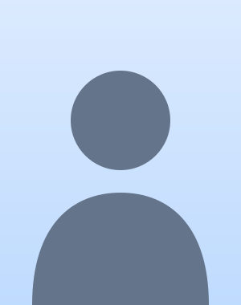

03
CONTENTS
콘텐츠 · 영상
데이터를 보고 듣는 이야기로 바꿉니다

숫자에서 질문을 찾고, AI로 검증하고, 누구나 읽기 쉬운 이야기로 전합니다.
큰 데이터에서 독자가 궁금해할 질문을 찾습니다
브라질 이커머스 주문 데이터를 분석해 배송 지연과 별점의 관계를 밝히고, 지역별 차이를 대시보드로 정리했습니다.


시간대·정류소별 대여 기록을 분석해 출근길 오전 8시와 퇴근길 오후 6시에 몰리는 이동 흐름을 기사로 풀었습니다.
취재와 검증의 반복 작업을 AI에게 맡깁니다
관심 키워드 기사를 매일 아침 자동으로 모아 요약하고 팀 슬랙으로 보내 줍니다.

데이터를 보고 듣는 이야기로 바꿉니다
공공자전거 기사를 58초 숏폼으로 다시 만들었습니다. 대본부터 내레이션·자막까지 AI와 함께 제작했습니다.